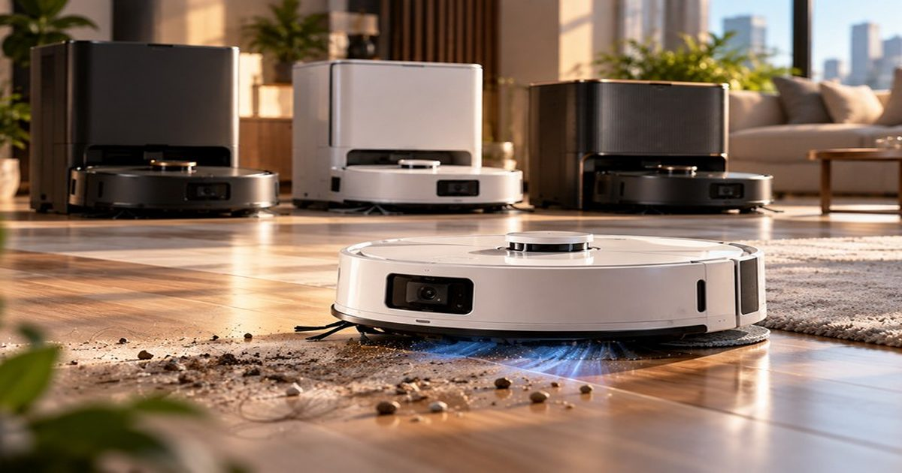

10 новых роботов-пылесосов 2026 года: от доступных моделей до флагманов с роликовыми швабрами
Роботы-пылесосы уже давно перестали быть просто «электровениками»: современные модели распознают препятствия, самоочищаются, моют и сушат швабры и не только.
В нашей подборке — десять актуальных моделей: от доступных до флагманских